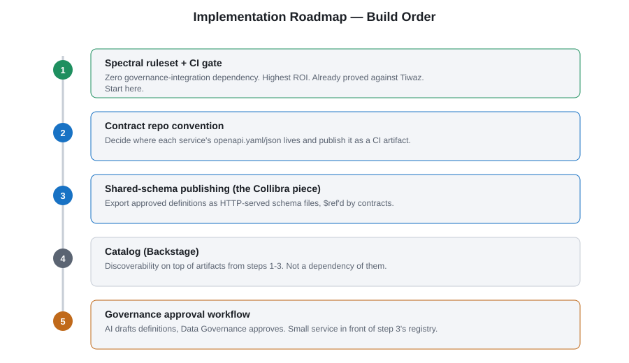

Implementation Roadmap
What the governance platform (Collibra/DataGalaxy stand-in) actually feeds, what the CI pipeline actually lints, and the build order that delivers value earliest.
Two different artifacts, two different owners
It's tempting to assume the data-governance platform is "where contracts come from" and feeds the CI pipeline directly. It doesn't. Two distinct artifacts flow through this pipeline:
| Artifact | Owner | Lives in | Role |
|---|---|---|---|
Governed data definitions (e.g. Customer, BondType) | Data Governance | governance/shared-models.yaml (Collibra stand-in) | Reusable schema fragments, $ref'd by contracts. Not itself an API contract. |
API contract (openapi.yaml/.json) | The API team | The API's own repo (mirrored under apis/) | The thing that actually gets linted in CI and deployed/cataloged. |
Collibra never goes near the CI pipeline directly. CI always lints the
API contract file, which happens to $ref into a Collibra-published
schema at author time. By the time CI lints the contract, that $ref is
just a URL string — Spectral doesn't need to resolve it to check
contract-level rules like versioned paths or operationIds.
Build order
Each step is independently useful — value before the whole pipeline is finished.

- Spectral ruleset + CI gate, first. Zero Collibra/governance integration needed. Already proved value against Tiwaz (33 errors found with zero dependencies). Highest ROI.
- Contract repo convention. Decide where each service's contract lives and get it published as a CI artifact.
- Shared-schema publishing (the Collibra piece). Expose governed data definitions as a static, versioned, HTTP-reachable schema file(s). Start with the fields people get wrong most often — customer, money/currency, dates.
- Catalog (Backstage) last. Discoverability on top of artifacts that already exist, not a dependency of them.
- Governance approval workflow. A later layer on top of step 3 — a small queue/API in front of the schema publisher. Don't let it block starting.
Practical first move
Pick one real, already-deployed service — Tiwaz is the proof case already used here — and do steps 1 and 2 against it this week:
- Vendor
governance/.spectral.yamlinto the service's own repo. - Add the CI lint step shown in the Contract-First practice.
- Get it failing/passing on real pull requests.
That's demonstrable progress without waiting on any governance-platform integration, and it's the same evidence basis used in the Rebuttal.